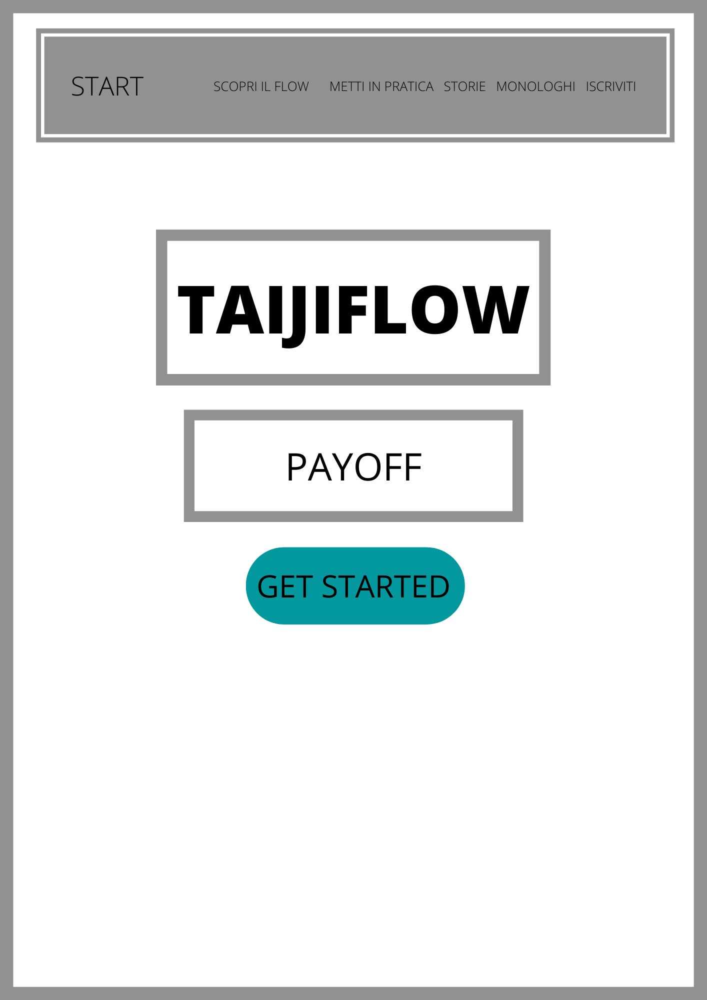
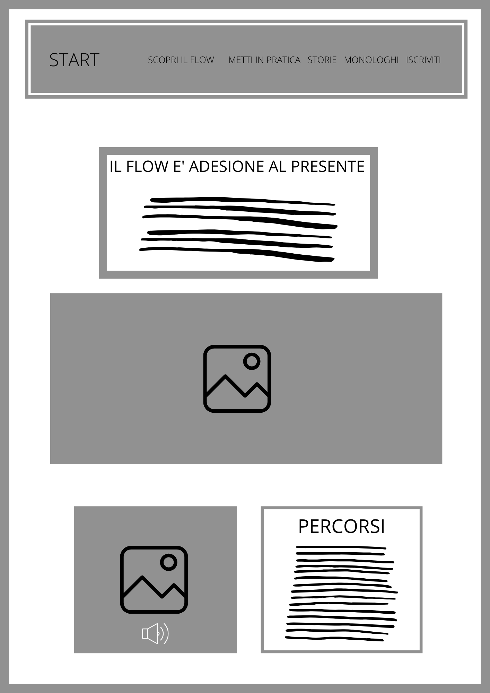
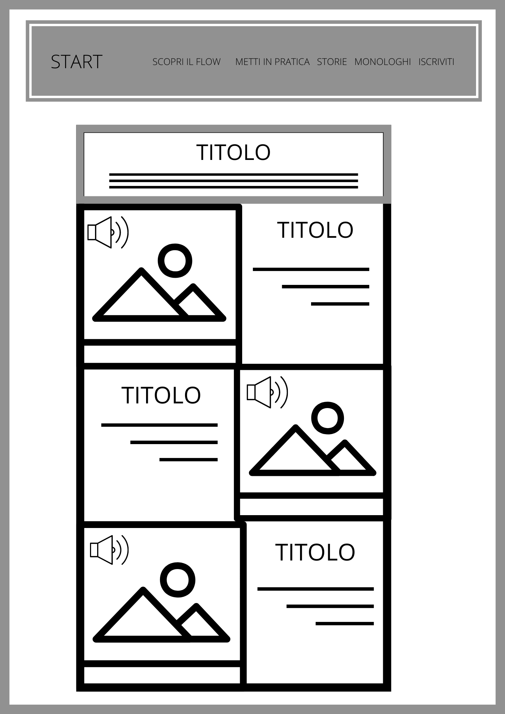
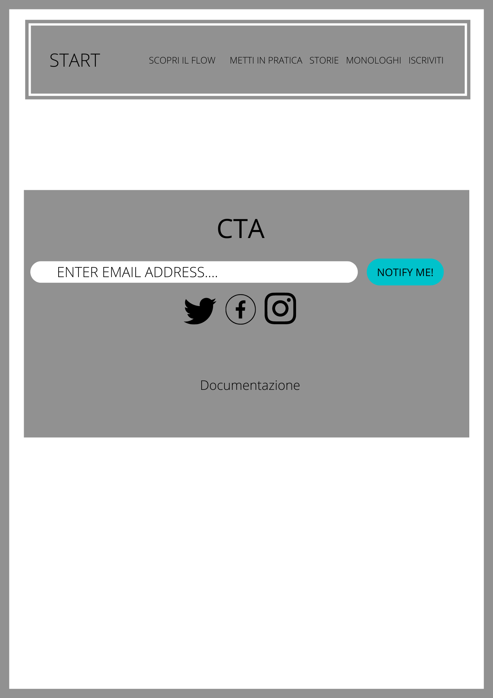

Documentazione esame
Abstract
Taijiflow è stato creato per concedere uno spazio virtuale ove una persona possa trovare tempo per se stesso, ed al contempo ricevere stimoli diversi dai social o dalle distraioni quotidiane.
A tal proposito, abbiamo selezionato tre diverse categorie di esperienze sonore: suoni naturali, fiabe e monologhi. In questo modo, l'utente potrà accedere alla sezione che preferisca in base alle proprie esigenze o a ciò che ritenga possa stimolarlo maggiormente.
Target
Il target primario individuato si riferisce a giovani lavoratori o studenti con necessità di trovare fonti di ispirazione alternative, ma al contempo si estende a tutti coloro i quali desiderino approcciarsi al mondo della mindfulness e del flow.
Analisi dei competitor e benchmarking
I maggiori competitor individuati sono noisli.com e zenradio.com.:
NOISLI
Noisli propone mixaggi interattivi di suoni differenti per la creazione di un ambiente adatto allo studio ed al relax. La grafica è semplice ed intuitiva, con l'uso di icone che tuttavia renda meno coinvolgente l'esperienza. La versione di prova del sito, d'altra parte, propone appena 4 suoni con i quali fare pratica, riservando il resto dei tools alla versione premium (o comunque a pagamento). Taijiflow, al contrario, offre sia un aggancio visivo più suggestivo, sia un'offerta maggiormente variegata ed originale: essa di fatto consiste non solo di suoni naturali, ma anche di storie e monologhi. L'iscrizione alla news letter di taijiflow garantisce inoltre nuovi contenuti settimanali: consigli, esercizi, nuovi percorsi.
ZENRADIO
Zenradio offre sicuramente una libreria più ampia, strutturata secondo categorie di facile intuizione, tuttavia non fornisce indicazioni teoriche di base capaci di indirizzare l'utente nell'esperienza. La versione premium è gratuita, ma permette solamente di salvare delle playlist costruite ad hoc dall'utente e di non avere pubblicità. Per quanto concerna nuovamente l'offerta, infine, si riscontra una varietà sì maggiore, ma al contempo legata ad una sola tipologia sonora rispetto a Taijiflow.
Architettura del sito e wireframe
HOMEPAGE
SCOPRI IL FLOW
METTI IN PRATICA
ISCRIZIONE E SOCIAL
Linguaggi e strumenti
HTML
CSS
JAVASCRIPT
BOOTSTRAP
GITHUB
GOOGLE FONTS
FONT AWESOME ICONS
CANVA
SIMILAR WEB
EPIDEMIC SOUND
GOOGLE TRENDS
Design
Dal punto di vista visivo Taijiflow conbina toni del verde/azzurro legati al mondo naturale con il contrasto tra bianco e nero che richiama l'equilibrio tra lo ying e lo yang. Alcuni dettagli grafici (come i bottoni e le keyword) sono evidenziati con il colore #64a19d. La scelta di questi colori è legata all'isotopia dell'ambiente, della natura, del relax, della concentrazione. Le immagini scelte sono semplici e autentiche, hanno una funzione estetica, ma fungono anche da aggancio visivo per il contenuto audio.
I font utilizzati sono: Nunito, -apple-system, BlinkMacSystemFont, Segoe UI, Roboto, Helvetica Neue, Arial, sans-serif, Apple Color Emoji, Segoe UI Emoji, Segoe UI Symbol, Noto Color Emoji. Il colore del font è bianco su sfondo nero o nero su sfondo bianco.
Tone of voice
Abbiamo optato principalmente per l'approccio enunciativo, cercando di coinvolgere il più possibile l'utente a sperimentare ciò che offre il sito. La terza persona viene utilizzata solo nel paragrafo "percorsi", nelle varie descrizioni invece abbiamo preferito la prima persona per un effetto comunicativo diretto, trasparente, vero.
Audio
Gli audio sono stati selezionati per non essere troppo invadenti, al fine di evitare la frustazioine dell'utente inesperto. Nella sezione "storie" vengono recitate fiabe tradizionali (voice over: Davide), mentre la sezione "monologhi" include contenuti completamente originali scritti e recitati sempre da Davide.
Communication strategy document
1. Background
In linea con i trend nati negli ultimi anni, Taijiflow si posiziona come strumento per l'approccio ed il supporto alla salute fisico-emotiva. Abbiamo notato, come evidenzi google trends, che la pandemia ha spinto gli utenti a ricercare maggiori informazioni per migliorare la loro vita a 360 gradi.
Il nostro pay-off è infatti "Trova il tuo ambiente ideale, get in the zone".

2. Obbiettivi comunicativi e costumer journey
Abbiamo immaginato un utente che attraverso query con keyword specifiche (equilibrio, flow, meditazione, performance, presente...), potesse essere condotto al nostro sito. Qui, assieme a basiche nozioni teoriche, gli sarebbero così stati anche offerti strumenti audio che sostenessero un suo primo approccio anche pratico. Nostro obiettivo è catturare questi utenti inesperti, dandogli la possiblità di sperimentare i benefici del flow. Al fine di fidelizzare l'utente, immaginiamo come step successivo la creazione di un'app direttamente scaricabile dal sito.
3. Target audience
Al fine di coinvolgere il target immaginato, ossia la fascia di popolazione giovane costituita da studenti/lavoratori, abbiamo pensato a una pubblicità sui social: ci siamo così concentrati in particolare su Instagram e Whatsapp.
4. Promozione
Il link del sito è stato inviato in vari gruppi Whatsapp, pubblicizzato grazie a storie su Instagram e messo in primo piano nella bibliografia dei nostri profili.